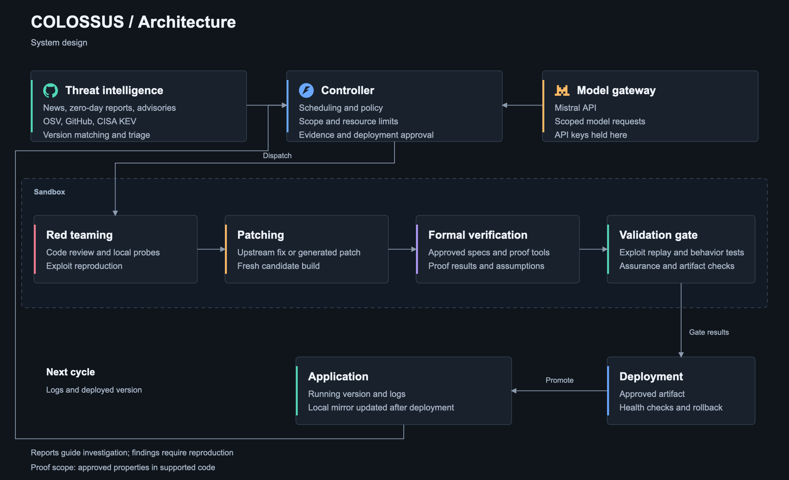

GLM candidate
Security check failed
The controller blocked promotion
and returned the failure to GLM.
Recurring cyberdefence / COLOSSUS
Defence needs a path from each finding
to a repair it can check.
as many published CVE records
in 2025 as in 2016
+20.4% from 2024 to 2025
Team of four · led by Daniel
Measured lab prototype / 14 November 2026
AI proposes repairs.
Independent controls decide what can run.
Source: CVE Program metrics, accessed 14 Nov 2026. Published records measure disclosures, not all discovered vulnerabilities.

Python / FastAPI / SQLite · GLM through Mistral · Docker + gVisor · Dafny + Z3 · React / Tailwind / Typer
02 / The demonstration
DSVW · a deliberately vulnerable Python training app · one SQL-query repair
GLM candidate
The controller blocked promotion
and returned the failure to GLM.
Corrected candidate
The lab observed health for 300 seconds,
then promoted and refreshed the mirror.
Next cycle: NO_CHANGE
No additional supported repair, not a security guarantee.
03 / Formal verification
The model constructs candidates. Fixed contracts and proof tools check them.
Password changesAuthenticated actor, existing resource, actor matches target.
Reading a secretAuthenticated actor, existing resource, actor owns resource.
RegistrationPublic registration cannot grant admin status.
Public projectionReturn the specified username/email representation.
Demonstrated on an owned authorization component. Applications always run mandatory tests.
04 / Measured results
Two fresh DSVW cycles, each with a real five-minute health observation.
First cycle
330.7sFresh repetition
341.0sModel costs only. Compute and development excluded.
Shared time scale starts at zero. Remaining work is elapsed time outside observation.
platform tests passed
plus 3 frontend tests
repositories assessed
20 source archives admitted
application smoke checks
VAmPI variant + selected PyGoat lab
DSVW has full remediation evidence. The wider campaign records compatibility, assisted starts, failures and unsupported cases.
05 / The next step
Fresh AI repair with independent checks.
Lab deployment, recurrence and recovery.
Formal proof for a named component.
Broader stack and repair adapters.
Proofs linked to public-target code.
CTIBench, CyberSecEval and DafnyBench runs.
Every accepted repair should come
with evidence you can inspect.
Constrained lab prototype. No production-security guarantee. Public benchmark campaigns remain unrun.
Speaker notes